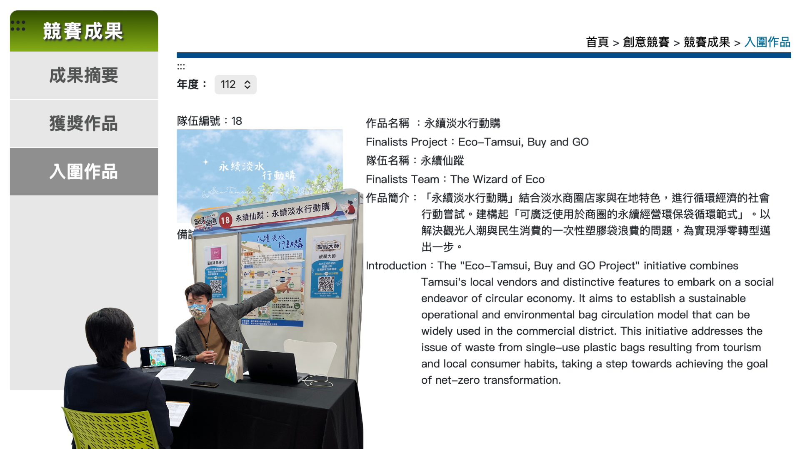
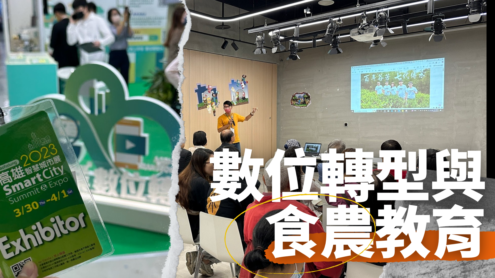

永續發展

112 年｜教育部氣候變遷創意實作競賽
在提案階段即與淡水商圈簽署 MOU，確保計畫具備實務執行基礎
設計可複製的環保袋循環經營模式，落實 SDG 12（責任消費與生產）
從 133 隊參賽隊伍中脫穎而出，入圍全國決賽

115 年｜農業部食農教育推廣計畫
協助將 ISO 14064-1 溫室氣體盤查結果轉化為易於理解的永續教育模組
協助青農發展食農教育計畫提案，整合農業生產、碳盤查與永續敘事內容
執行跨單位協作，整合農業生產端與消費端的永續敘事，提升計畫整體的社會影響力